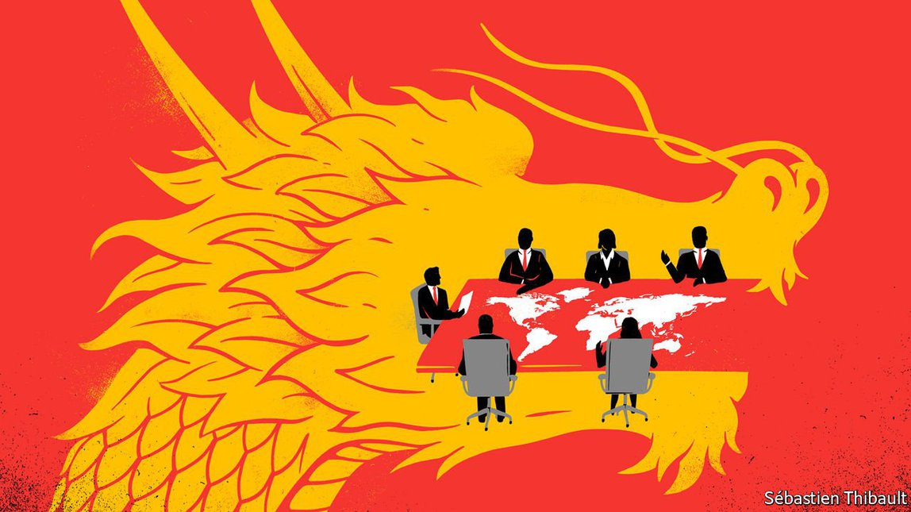
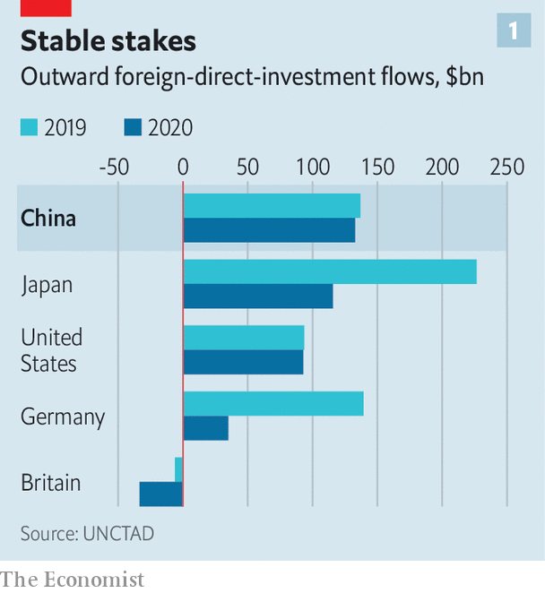
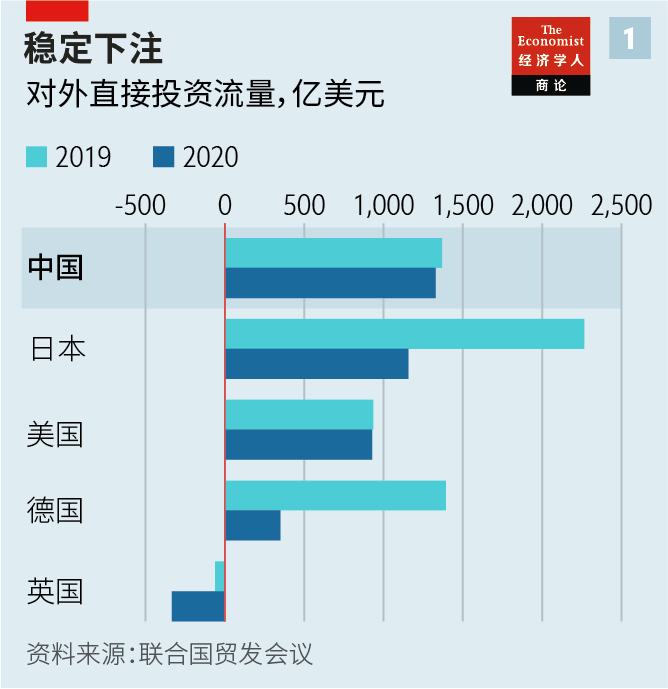
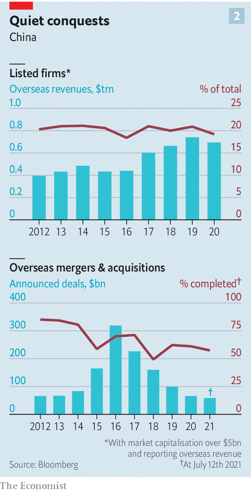
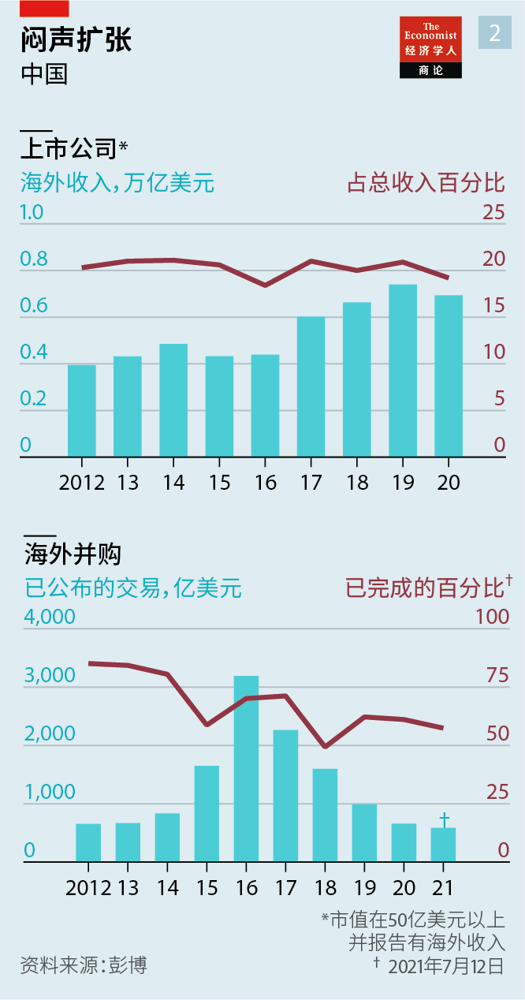

2021-07-27T07:52:03+00:00
Subtle globalisers
低调的全球化者
低調的全球化者
China Inc’s new inconspicuous expansion
中国公司不露锋芒的新扩张
中國公司不露鋒芒的新擴張
Chinese companies are adapting to a more hostile global climate—and thriving
中国企业正在适应更加恶劣的全球氛围，并蓬勃发展
中國企業正在適應更加惡劣的全球氛圍，並蓬勃發展

DEEPGLINT, A CHINESE facial-recognition firm, was one of 14 companies slapped with American sanctions on July 9th for alleged links to human-rights abuses in China’s far-western region of Xinjiang. It is also a globally recognised leader in its field and has raised money from Sequoia Capital and other big American investment firms. DeepGlint’s founders, who graduated from Stanford and Brown universities in America, must now discuss with their foreign backers the prospect of decoupling from the Western commercial sphere. Many Chinese companies have been forced to hold similar talks.
七月九日，美国将14家它指控参与在新疆侵犯人权的企业列入制裁名单，人脸识别公司格灵深瞳是其中之一。这家中国公司是全球公认的行业领导者，已从红杉资本等美国大型投资公司获得融资。格灵深瞳的几名创始人毕业于美国的斯坦福大学和布朗大学，现在必须要与他们的外国投资者讨论与西方商业界脱钩的前景。许多中国公司已被迫展开类似的讨论。
七月九日，美國將14家它指控參與在新疆侵犯人權的企業列入制裁名單，人臉識別公司格靈深瞳是其中之一。這家中國公司是全球公認的行業領導者，已從紅杉資本等美國大型投資公司獲得融資。格靈深瞳的幾名創始人畢業於美國的斯坦福大學和布朗大學，現在必須要與他們的外國投資者討論與西方商業界脫鉤的前景。許多中國公司已被迫展開類似的討論。
China Inc appears to be on the back foot. In America President Joe Biden has picked up where Donald Trump left off, placing restrictions on Chinese companies. Last year Congress passed a bill that may eventually force Chinese firms to delist from American stock exchanges, which would affect nearly $2trn in market value. Huawei, banned from America, has struggled to sell its 5G telecoms kit elsewhere in the West. ByteDance was nearly forced to divest from its prized short-video app, TikTok, over American fears that the Chinese regime could access global users’ personal data. Tencent, another internet giant, is said to be haggling with American regulators worried about its 40% stake in Epic Games, the developer of Fortnite.
中国公司似乎处境不妙。在美国，拜登接棒特朗普，继续对中国企业施加限制。去年美国国会通过了一项法案，最终可能会迫使中国公司从美国证券交易所退市，涉及的市值近2万亿美元。华为在美国被禁，在其他西方市场销售其5G通讯设备也举步维艰。由于美国担心中国政府可以获得全球用户的个人数据，字节跳动差点被迫剥离其价值极高的短视频应用TikTok。另一家互联网巨头腾讯据说正在和美国监管机构谈判，因为后者对它持有《堡垒之夜》开发商Epic Games40%的股份感到担忧。
中國公司似乎處境不妙。在美國，拜登接棒特朗普，繼續對中國企業施加限制。去年美國國會通過了一項法案，最終可能會迫使中國公司從美國證券交易所退市，涉及的市值近2萬億美元。華為在美國被禁，在其他西方市場銷售其5G通訊設備也舉步維艱。由於美國擔心中國政府可以獲得全球用戶的個人數據，字節跳動差點被迫剝離其價值極高的短視頻應用TikTok。另一家互聯網巨頭騰訊據說正在和美國監管機構談判，因為後者對它持有《堡壘之夜》開發商Epic Games40%的股份感到擔憂。
Around the world Chinese companies are, fairly or not, viewed as instruments of the Communist Party. Britain’s prime minister, Boris Johnson, said on July 7th that the government would probe the Chinese acquisition of Newport Wafer Fab, the country’s largest chipmaker, on national-security grounds. Australia’s defence department could tear up a 99-year lease with a private Chinese company for a big port. Completed outbound acquisitions by Chinese firms shrivelled from some $200bn in 2016 to $36bn in 2020. Cross-border lending, mostly to poor countries, by some of China’s state banks has stopped growing.
无论公允与否，中国公司如今在世界各地都被视为共产党的工具。英国首相约翰逊7月7日表示，出于国家安全考虑，英国政府将调查中国对英国最大芯片制造商Newport Wafer Fab的收购。澳大利亚国防部可能会撕毁一家中国私营公司对一个大型港口为期99年的租约。中国企业完成的海外收购从2016年的约2000亿美元缩水到2020年的360亿美元。中国一些国有银行主要对贫困国家发放的跨境贷款已经停止增长。
無論公允與否，中國公司如今在世界各地都被視為共產黨的工具。英國首相約翰遜7月7日表示，出於國家安全考慮，英國政府將調查中國對英國最大芯片製造商Newport Wafer Fab的收購。澳大利亞國防部可能會撕毀一家中國私營公司對一個大型港口為期99年的租約。中國企業完成的海外收購從2016年的約2000億美元縮水到2020年的360億美元。中國一些國有銀行主要對貧困國家發放的跨境貸款已經停止增長。
It is not the first time that a wave of Chinese corporate expansion has met a frosty reception. When commodity giants such as CNOOC, an oil firm, began buying foreign reserves, and rivals, in the 1990s, it stoked fears of resource colonialism. In the 2010s Chinese industrial groups’ aggressive pursuit of Western rivals from chemicals (ChemChina’s takeover of Syngenta) to cars (Geely’s of Volvo) reminded some anxious rich-world governments of Japan’s corporate conquests in the 1980s. At the same time, Chinese acquisitions of trophy assets such as the Waldorf Astoria hotel (by Anbang, a conglomerate) allowed other Westerners to dismiss China Inc as unserious or dodgy (a suspicion confirmed by the subsequent collapse of Anbang and a few similar groups after charges of fraud).
中国企业的扩张遇冷并非首次。上世纪90年代，中海油等大宗商品巨头开始收购外国矿藏和竞争对手，引发了对中国“资源殖民主义”的担忧。在上一个十年里，从化工（中国化工收购先正达）到汽车（吉利收购沃尔沃），中国的工业集团对西方竞争对手的猛烈攻势让一些焦虑的发达国家政府想起了上世纪80年代日本企业的收购狂潮。与此同时，中国对华尔道夫酒店（Waldorf Astoria，被企业集团安邦收购）等炫耀性资产的收购让其他西方人认为中国公司太过儿戏或有可疑勾当（后来安邦和一些类似的集团在被控诈骗后倒闭，证实了这种猜疑）。
中國企業的擴張遇冷並非首次。上世紀90年代，中海油等大宗商品巨頭開始收購外國礦藏和競爭對手，引發了對中國“資源殖民主義”的擔憂。在上一個十年里，從化工（中國化工收購先正達）到汽車（吉利收購沃爾沃），中國的工業集團對西方競爭對手的猛烈攻勢讓一些焦慮的發達國家政府想起了上世紀80年代日本企業的收購狂潮。與此同時，中國對華爾道夫酒店（Waldorf Astoria，被企業集團安邦收購）等炫耀性資產的收購讓其他西方人認為中國公司太過兒戲或有可疑勾當（後來安邦和一些類似的集團在被控詐騙後倒閉，證實了這種猜疑）。
Now, just as innovative Chinese tech firms have captivated Wall Street, China’s increasingly authoritarian regime is itself reining in its global champions. President Xi Jinping appears bent on disconnecting them from Western capital markets and controlling their data. Tencent and Alibaba, an e-commerce behemoth, have between them lost $340bn in market value since the crackdown began late last year. Days after its $67bn New York flotation, Didi found its ride-hailing app banned by Chinese data regulators. ByteDance has scotched plans to go public in New York.
现在，就在华尔街情迷富有创新力的中国科技公司之际，中国日益威权的政府正在自己约束本国的全球领军者。国家主席习近平似乎一心要切断它们与西方资本市场的联系并控制它们的数据。这轮打压自去年年底开始以来，腾讯和电子商务巨头阿里巴巴的市值已经总共蒸发了3400亿美元。滴滴在纽约以670亿美元的市值上市仅几天后，其网约车应用就被中国数据监管机构勒令下架。字节跳动已经搁置了在纽约上市的计划。
現在，就在華爾街情迷富有創新力的中國科技公司之際，中國日益威權的政府正在自己約束本國的全球領軍者。國家主席習近平似乎一心要切斷它們與西方資本市場的聯繫並控制它們的數據。這輪打壓自去年年底開始以來，騰訊和電子商務巨頭阿里巴巴的市值已經總共蒸發了3400億美元。滴滴在紐約以670億美元的市值上市僅幾天後，其網約車應用就被中國數據監管機構勒令下架。字節跳動已經擱置了在紐約上市的計劃。
Speak softly and carry a small cheque
轻言细语，只带小额支票
輕言細語，只帶小額支票
All this looks like a treacherous climate for Chinese companies. Look closer, though, and a new generation of firms is not just adapting to it but thriving. Many have spent years expanding global operations and now make as much money outside China as they do within. Some are pursuing smaller investments under the radar. And, inverting a decades-old trend of copying Western intellectual property (IP), a few have become tech powerhouses in their own right, selling advanced products to the world.
这一切看起来让中国企业的处境颇为险恶。然而仔细观察会发现，新一代企业不仅正在调整适应这种新环境，而且还在蓬勃发展。许多企业已经花费多年时间扩大全球业务，现在海外收入已经堪比国内收入。有些企业正在悄悄寻求较小规模的投资。还有少数企业已经成为真正的科技巨擘，向全世界销售先进的产品，一改数十年来抄袭西方知识产权的旧习。
這一切看起來讓中國企業的處境頗為險惡。然而仔細觀察會發現，新一代企業不僅正在調整適應這種新環境，而且還在蓬勃發展。許多企業已經花費多年時間擴大全球業務，現在海外收入已經堪比國內收入。有些企業正在悄悄尋求較小規模的投資。還有少數企業已經成為真正的科技巨擘，向全世界銷售先進的產品，一改數十年來抄襲西方知識產權的舊習。
The scale of China Inc is formidable. China was the largest investor in the world in 2020. Foreign direct investment (FDI) from Chinese firms hit $133bn, down only slightly from 2019 despite the headwinds (see chart 1). The country has some 3,400 multinationals, almost as many as America and western Europe combined, reckons Bain, a consultancy. Around 360 big listed Chinese groups report foreign revenues. These amounted to around $700bn in 2020, compared with 250 large firms earning a total of $400bn in 2012, according to data from Bloomberg (see chart 2). In 2020 Chinese venture capitalists ploughed an estimated $3.2bn into American startups in 249 deals, the second-biggest year on record by value, calculates Rhodium Group, a research firm. Analysts at CB Insights say that Chinese investors’ participation in American venture deals last quarter was the highest since at least 2016.
“中国公司”的规模令人生畏。2020年，中国是全球最大的投资国，中国企业的对外直接投资达到了1330亿美元；尽管遇到了阻力，但仅比2019年略微下降（见图表1）。咨询公司贝恩估计中国约有3400家跨国公司，几乎相当于美国和西欧的总和。约360家大型上市中国集团报告了海外收入。根据彭博的数据（见图表2），2020年这些上市集团的海外收入总额约为7000亿美元，相比之下，2012年时有250家大型跨国公司报告了海外收入，总额为4000亿美元。研究公司荣鼎咨询（Rhodium Group）的数据显示，2020年，中国风险投资家通过249笔交易向美国创业公司投资了约32亿美元，年投资额创下历史第二高。CB Insights的分析师表示，上季度中国投资者在美国风投交易中的参与度至少是2016年以来的最高水平。
“中國公司”的規模令人生畏。2020年，中國是全球最大的投資國，中國企業的對外直接投資達到了1330億美元；儘管遇到了阻力，但僅比2019年略微下降（見圖表1）。諮詢公司貝恩估計中國約有3400家跨國公司，幾乎相當於美國和西歐的總和。約360家大型上市中國集團報告了海外收入。根據彭博的數據（見圖表2），2020年這些上市集團的海外收入總額約為7000億美元，相比之下，2012年時有250家大型跨國公司報告了海外收入，總額為4000億美元。研究公司榮鼎諮詢（Rhodium Group）的數據顯示，2020年，中國風險投資家通過249筆交易向美國創業公司投資了約32億美元，年投資額創下歷史第二高。CB Insights的分析師表示，上季度中國投資者在美國風投交易中的參與度至少是2016年以來的最高水平。
The Chinese presence is deep as well as broad. Last year more than 100 of the listed firms earned at least 30% of revenues outside China; 27 earned 70% or more. All told, China’s top ten foreign earners booked $350bn or so in overseas sales. This total has grown by 10% a year on average since 2005, Bain says, twice as fast as the equivalent figure in America, Europe or Japan. Tencent’s foreign sales have risen at an annual rate of 40% for nearly a decade, and now make up 7% of its huge top line.
中国企业的海外扩张不仅广泛，而且深入。去年，这些上市公司中有100多家至少有30%的收入来自海外，27家占到70%以上。海外收入最高的十家中国公司的海外销售总额约为3500亿美元。贝恩表示，自2005年以来，这一数字平均每年增长10%，是美国、欧洲或日本增速的两倍。近十年来，腾讯的海外销售额以每年40%的速度增长，如今已占到其庞大总收入的7%。
中國企業的海外擴張不僅廣泛，而且深入。去年，這些上市公司中有100多家至少有30%的收入來自海外，27家佔到70%以上。海外收入最高的十家中國公司的海外銷售總額約為3500億美元。貝恩表示，自2005年以來，這一數字平均每年增長10%，是美國、歐洲或日本增速的兩倍。近十年來，騰訊的海外銷售額以每年40%的速度增長，如今已佔到其龐大總收入的7%。
The first plank of China Inc’s new global strategy is astute localisation. In the past most Chinese FDI consisted of asset purchases. Last year, by contrast, a lot was reinvested earnings from operations abroad. Hisense, a maker of consumer electronics, wants to treble its overseas sales, from $7.9bn in 2020 to $23.5bn in 2025, half its projected total, says Candy Pang, its head of marketing. That would leave a lot of money to spend on foreign factories, research and development, and marketing (it is sponsoring the 2022 football World Cup in Qatar, among other sports events).
中国公司新全球战略的第一大支柱是精明的本地化。过去，中国的大部分直接投资都是购买资产。而在去年，很多投资都是海外业务收益的再投资。消费电子产品制造商海信希望将其海外销售额增加两倍，从2020年的79亿美元增加到2025年的235亿美元，这将占其预计总销售额的一半，海信的营销负责人庞静表示。这会让公司拥有大笔资金来投注海外工厂、研发和营销（海信已成为2022年卡塔尔世界杯等体育赛事的赞助商）。
中國公司新全球戰略的第一大支柱是精明的本地化。過去，中國的大部分直接投資都是購買資產。而在去年，很多投資都是海外業務收益的再投資。消費電子產品製造商海信希望將其海外銷售額增加兩倍，從2020年的79億美元增加到2025年的235億美元，這將佔其預計總銷售額的一半，海信的營銷負責人龐靜表示。這會讓公司擁有大筆資金來投注海外工廠、研發和營銷（海信已成為2022年卡塔爾世界盃等體育賽事的贊助商）。
Chinese firms have also retained their subsidiaries’ foreign leadership. Despite recently merging with another state-backed giant, ChemChina has allowed its foreign assets to operate as global companies. Pirelli, which it bought in 2015 for €7.1bn ($7.6bn), still makes tyres in Italy. Syngenta, for which it paid $43bn a year later, maintains a Swiss headquarters, a mostly foreign executive team, and a nine-person board with only two Chinese state officials. Similarly, Geely has allowed foreigners to run Volvo, and Haier, an appliance-maker, kept most of GE Appliances’ top brass after acquiring the American firm. “You can belong to China without having a Chinese-dominated board,” says an executive at one Chinese multinational.
中国企业还保留了子公司的外籍领导层。中国化工虽在近期与另一家国有巨头合并，但仍旧让自己的海外资产作为全球公司运营。它在2015年以71亿欧元（76亿美元）收购的倍耐力（Pirelli）目前仍在意大利生产轮胎。一年后它以430亿美元收购了先正达，保留了它在瑞士的总部，高管团队以外国人为主，九人董事会里只有两名中国政府官员。同样，吉利也让外国人继续经营沃尔沃，而家电制造商海尔也在收购美国的通用家电（GE Appliances）后保留了它的大部分高管。“属于中国的公司不一定要由中国人控制董事会。”一家中国跨国公司的高管表示。
中國企業還保留了子公司的外籍領導層。中國化工雖在近期與另一家國有巨頭合并，但仍舊讓自己的海外資產作為全球公司運營。它在2015年以71億歐元（76億美元）收購的倍耐力（Pirelli）目前仍在意大利生產輪胎。一年後它以430億美元收購了先正達，保留了它在瑞士的總部，高管團隊以外國人為主，九人董事會裡只有兩名中國政府官員。同樣，吉利也讓外國人繼續經營沃爾沃，而家電製造商海爾也在收購美國的通用家電（GE Appliances）後保留了它的大部分高管。“屬於中國的公司不一定要由中國人控制董事會。”一家中國跨國公司的高管表示。
The second pillar of China Inc’s new globalisation strategy is to shun mega-deals in favour of smaller ones. The speculative wave of outbound investments between 2015 and 2017 swallowed up $425bn in assets and raised plenty of eyebrows among foreign and Chinese regulators alike. By contrast, of the 235 outbound transactions so far this year only three were valued at more than $1bn.
中国公司新全球战略的第二大支柱是避开大买卖，转向小交易。2015年至2017年的境外投机潮狂揽4250亿美元的资产，令外国和中国的监管机构都为之侧目。相比之下，今年迄今为止达成的235笔海外交易中只有三笔价值超过10亿美元。
中國公司新全球戰略的第二大支柱是避開大買賣，轉向小交易。2015年至2017年的境外投機潮狂攬4250億美元的資產，令外國和中國的監管機構都為之側目。相比之下，今年迄今為止達成的235筆海外交易中只有三筆價值超過10億美元。
The master of mini-dealmaking is Tencent. It has made at least 85 cross-border investments since the start of 2019, according to Refinitiv, a data provider. Many of these are small stakes taken as part of a larger consortium of investors that includes prominent non-Chinese private-equity groups. This year, for example, Tencent bought a 4% stake in Rakuten, a Japanese internet group, for about $600m—small change for a giant worth nearly $700bn. It has also continued to invest in America, with at least 12 deals over the past two-and-a-half years, including the purchase of a $150m stake in Reddit, an American online platform which hosts popular discussion forums.
腾讯是小笔交易的大师。数据供应商路孚特（Refinitiv）称，自2019年初以来，腾讯至少做了85笔跨境投资。其中很多是少数持股，腾讯作为一个投资者大财团中的一员认购，该财团中还包括一些著名的非中国私募集团。例如，今年腾讯以约6亿美元的价格收购了日本互联网集团乐天（Rakuten）4%的股份，对于一家市值近7000亿美元的巨头来说这笔钱不过是个零头。腾讯还继续在美国投资，在过去两年半中至少达成了12笔交易，包括斥资1.5亿美元收购拥有热门论坛的美国在线平台Reddit的股份。
騰訊是小筆交易的大師。數據供應商路孚特（Refinitiv）稱，自2019年初以來，騰訊至少做了85筆跨境投資。其中很多是少數持股，騰訊作為一個投資者大財團中的一員認購，該財團中還包括一些著名的非中國私募集團。例如，今年騰訊以約6億美元的價格收購了日本互聯網集團樂天（Rakuten）4%的股份，對於一家市值近7000億美元的巨頭來說這筆錢不過是個零頭。騰訊還繼續在美國投資，在過去兩年半中至少達成了12筆交易，包括斥資1.5億美元收購擁有熱門論壇的美國在線平台Reddit的股份。
Chinese companies are making their global presence felt in one last way. Rather than swooping into foreign countries to buy up technology, or copying Western IP, they are going out to sell their own, says Bagrin Angelov of CICC, a Beijing-based investment bank. Because Chinese subsidies to makers of electric cars and batteries require them to own some of the core IP, companies such as BYD, CATL, Ganfeng and SVolt raced to develop it. Having done so, they are now targeting export markets. BYD and SVolt are setting up factories in Europe. So is CATL, which in December also announced plans to build a $5bn one in Indonesia.
中国公司还在以最后一种方式建立全球影响力。它们不再像以前那样冲到国外去购买技术，或者抄袭西方的知识产权，而是走出去销售自己的技术，总部位于北京的投资银行中金公司的安国邦（Bagrin Angelov）表示。由于中国补贴电动汽车和电池制造商的条件是要求它们自主拥有部分核心知识产权，比亚迪、宁德时代、赣锋锂业和蜂巢能源等公司竞相开展核心技术研发。掌握核心技术之后，它们现在开始瞄准出口市场。比亚迪和蜂巢能源正在欧洲设厂。宁德时代也一样，它还在去年12月宣布计划投资50亿美元在印度尼西亚建厂。
中國公司還在以最後一種方式建立全球影響力。它們不再像以前那樣衝到國外去購買技術，或者抄襲西方的知識產權，而是走出去銷售自己的技術，總部位於北京的投資銀行中金公司的安國邦（Bagrin Angelov）表示。由於中國補貼電動汽車和電池製造商的條件是要求它們自主擁有部分核心知識產權，比亞迪、寧德時代、贛鋒鋰業和蜂巢能源等公司競相開展核心技術研發。掌握核心技術之後，它們現在開始瞄準出口市場。比亞迪和蜂巢能源正在歐洲設廠。寧德時代也一樣，它還在去年12月宣布計劃投資50億美元在印度尼西亞建廠。
BeiDou, China’s state-owned answer to America’s GPS satellite-navigation system, was used by more than 100 countries in 2020, according to EY, a consultancy. Chinese telecommunications services cover more than 170 countries with a population of 3bn people. Regardless of American sanctions, Huawei remains a popular choice for 5G networks even in parts of Europe. Horizon Robotics, which develops self-driving systems, counts Germany’s Volkswagen and Bosch among its partners.
国有的北斗系统是中国为替代美国GPS卫星导航系统而建，根据咨询公司安永的数据，2020年有100多个国家使用了北斗。中国的电信业务覆盖170多个国家，服务30亿人口。即使被美国制裁，华为仍然是5G网络的热门选择，甚至在欧洲部分地区也是如此。开发自动驾驶系统的地平线公司的合作伙伴包括德国的大众汽车和博世。
國有的北斗系統是中國為替代美國GPS衛星導航系統而建，根據諮詢公司安永的數據，2020年有100多個國家使用了北斗。中國的電信業務覆蓋170多個國家，服務30億人口。即使被美國制裁，華為仍然是5G網絡的熱門選擇，甚至在歐洲部分地區也是如此。開發自動駕駛系統的地平線公司的合作夥伴包括德國的大眾汽車和博世。
And new Chinese stars are rising all the time. Few fashionistas probably realise than Shein, a fast-fashion darling beloved of the hip TikTok set, is Chinese. The company boasts the top shopping app in 50 countries—including America, where it was downloaded on more iPhones than Amazon in June. OneConnect, a financial-technology platform owned by Ping An, a big insurer, is selling a number of digital-banking products developed for China to banks and other firms across Asia and beyond. It recently designed an artificial-intelligence fraud-prevention system for a Sri Lankan lender.
中国的企业新星也在不断冉冉升起。可能很少有时尚达人注意到，深受TikTok潮人们喜爱的快时尚宠儿Shein出自中国。该公司的购物应用在包括美国在内的50个国家中热度排名第一，6月在美国的iPhone下载量超过了亚马逊。大型保险公司平安旗下的金融科技平台金融壹账通正在向亚洲及其他地区的银行和其他公司销售多种数字银行产品，这些产品原是为中国开发的。最近它为一家斯里兰卡银行设计了一个人工智能防欺诈系统。
中國的企業新星也在不斷冉冉升起。可能很少有時尚達人注意到，深受TikTok潮人們喜愛的快時尚寵兒Shein出自中國。該公司的購物應用在包括美國在內的50個國家中熱度排名第一，6月在美國的iPhone下載量超過了亞馬遜。大型保險公司平安旗下的金融科技平台金融壹賬通正在向亞洲及其他地區的銀行和其他公司銷售多種數字銀行產品，這些產品原是為中國開發的。最近它為一家斯里蘭卡銀行設計了一個人工智能防欺詐系統。
These subtle corporate conquerors could still be stymied—by the heavy hand of China’s Communist rulers or America and its allies, which are bound to keep an ever beadier eye on Chinese commercial incursions. The go-getting Chinese multinationals would then need to adapt once again. They have shown themselves to be more than capable of doing so. ■
这些低调扩张的企业仍可能遭受中国共产党统治者的重拳或美国及其盟友的阻挠，后者必将更加小心地提防中国的商业入侵。届时雄心勃勃的中国跨国公司将需要再次适应形势。它们已经证明自己完全具备这项能力。
這些低調擴張的企業仍可能遭受中國共產黨統治者的重拳或美國及其盟友的阻撓，後者必將更加小心地提防中國的商業入侵。屆時雄心勃勃的中國跨國公司將需要再次適應形勢。它們已經證明自己完全具備這項能力。